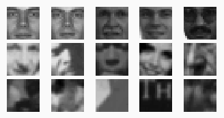
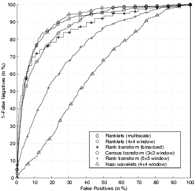
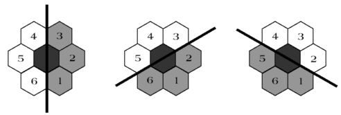

Sample applications
Pattern recognition
As an example of a difficult pattern recognition application, ranklets have been used in face detection tests over the 24'045 images in the MIT-CBCL face database. These are low-resolution (19x19) images of faces and non-faces.
The image below shows sample training faces (1st row), test faces (2nd row) and test non-faces (3rd row) from this database.

Below you can find a ROC curve obtained using a simple distance-and-threshold classifier. As can be seen, ranklets outperform several other rank transform, as well as Haar wavelets.

Details on these experiments can be found in the original paper on ranklets. Using density estimation over feature vectors of ranklets actually outperforms SVMs on this database, giving an EER of 11% - as documented here.
Hexagonal pixel lattices
An extension of ranklets to hexagonal pixel lattices has been shown to give comparable performance in face detection experiments over a suitaby resampled version of the same (MIT-CBCL) database. Since hexagonal pixel sensors have now made their way into consumer cameras, it is of interest to show that the algorithm can be applied to the output of such sensors without resampling. Details in this paper.

Point tracking
Back to a classic field of application for rank features, ranklets can indeed be used to track feature points across a video sequence. As has been shown, the quality of the tracking is sufficent to perform 3D reconstruction of a deformable object from an uncalibrated sequence (see paper).
Digital mammography
This application, pioneered by M Masotti et al at the University of Bologna, Italy in 2006 ([1], [2]), has become one of the main fields of application for ranklets. See the Bibliography section for the relevant works and patents.
Other applications
Other applications include
- Breast sonography
- Texture classification (see in particular variance ranklets)
- Content-based image retrieval
- Face verification
See the Bibliography for details